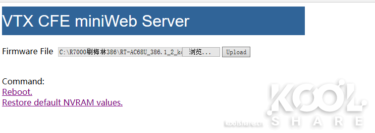

网件 R7000 刷 Koolshare 论坛的384以上梅林固件
- 参考
总结
- 修改了CFE后，进入miniweb界面刷机界面，可以上传koolshare的固件，也可以上传华硕AC68U的官方固件。
- 手上2台 R7000 很难组AiMesh。用比较新的固件（试过 386.2, 386.1, 384.18） 都不能组网成功。
- 有时候能进入一种类似mesh，类似ap 的模式。节点作为一个客户端连上主路由，也能上网，登陆主路由的管理页面；但是 主路由提示添加mesh节点失败，mesh管理界面看不到。网速就百兆左右。
- 主 384.13_1 Node 384.10_2 ，只发现这个组合可以组AiMesh，但是Node经常容易断流。网速就百兆左右。
刷 梅林 384、386 固件
384的好处是，支持AiMesh。R7000作为主路由可能和刷的固件版本有关系。
版本和Bug
2021.3.8 BUG反馈：USB2.0无法使用！！！USB3.0正常
2021.3.17 更新CFE_R7000_386_27DB.bin，更新内容如下：
* 2.4G和5G发射功率均提升为27db
* 解决双红叉问题。
2021.05.05 386系统下，无法使用mtd-write刷CFE，必须回384或者380；
但是前几天爬文的时候发现，有个网友说可以用dd命令，我尝试了两台机器，一台是DIR868L一台R6700，
均成功刷进，步骤就是上传新的CFE到/tmp目录，然后输入
dd if=/tmp/CFE_new of=/dev/mtd0 接着输入nvram erase 然后reboot就行。
注意：刷CFE有风险，dd命令是不做验证的，你的CFE不管对错，都会被刷进去！！！
所以个人建议最好还是回384刷CFE比较保险。
相关工具
链接： https://pan.baidu.com/s/1gRgljocNi1A6QO71X_dgeg
提取码： dy94
刷机步骤
- 将R7000先刷成梅林 380 版本，成功后，开启ssh服务
- 备份当前CFE
ssh登陆后执行dd if=/dev/mtd0 of=/tmp/boot.bin，将boot.bin 备份到本地。 - 修改CFE中的Mac地址
-
用CFEEDIT这个软件打开CFE_R7000_386.bin，需要修改里面的MAC地址和机器型号信息，如下：
注意：这里不要修改这三个MAC地址的前6位，不然会导致AIMESH搜索不到节点！！！！！！
1 2 3 4
et0macaddr --> 后六位替换成路由器的mac地址 0:macaddr --> 后六位替换成路由器的mac地址 1:macaddr --> 后六位替换成路由器mac地址+4 修改完后的CFE另存为一个，这里以CFE_R7000_386_0000.bin为例。
- SCP把mtd-write和CFE_R7000_386_0000.bin上传到路由器的/tmp目录下。
- 刷入新的CFE。
1 2 3
cd /tmp chmod 755 mtd-write ./mtd-write -i CFE_R7000_386_0000.bin -d boot
- 刷入成功后，输入reboot，回车，
- 要先naram恢复一下：关机后，长按
wps键，按住WPS看到电源灯闪烁是刷CFE成功的重要标志； - 等待一会重启，然后再关机，长按reset，重启，直到TTL=100出现5次。
这里需要注意下，有可能是192.168.50.1通也有可能是192.168.1.1通，这里假设是192.168.50.1通。 - 打开web浏览器，输入192.168.50.1，会弹出miniweb界面，这个时候基本就成功了。如果没出现，不用紧张，关闭电源，按住reset，通电，重新来一次，TTL=100五次以后松开，就可以进入了。
 - 先点
restore default NVRAM values，然后上传RT-AC68U_386.2_2_koolshare.trx，静静等着上传完成的提示。
- 等路由器自动重启完成后，进入，检查下AIMESH和软件中心，都正常的话就成功了，以后也可以直接正常升级AC68U的固件。
AiMesh 组网实例说明
- 参考
AiMesh 搜索节点很慢（一轮估计5分钟），搜索到了，组网也慢，5分钟后告诉组网失败，更是常见。。。
实例一： 两台R7000，一台作为主路由，一台作为 AiMesh Node
- 补充 2021-10-29
主 384.13_1 Node 384.10_2 经常容易断流。
在管理页面将主路由升级到 386.1 依然没有改善。aimesh 界面现实 node节点通过无线连接弱。
在管理页面中升级不了，选择上传的文件之后，就没反应了，看到固件升级界面。
尝试用命令刷机，koolshare的固件有问题：1 2 3
scp RT-AC68U_384.17_0_koolshare.trx root@192.168.1.163:/tmp/home/root/ mtd-write2 RT-AC68U_384.17_0_koolshare.trx linux 报错： Bad trx header
- 主路由 R7000 固件版（E4:6F:13:XX:XX:XX 伪装 DLINK）： 384.13_1（组网成功后，在 Adminstrator > Fireware Upgrade 升级到 386.1，运行正常）
- Node R7000 固件版（E4:F4:C6:XX:XX:XX 伪装 ASUS）： 384.10_2
- 升级完成，在 Adminstrator > System 勾选 Format JFFS partition at next boot: yes
- 开启 aimesh （老的384版本需要这样）
1 2
nvram set amas_force=1 nvram commit
- 重启
- 增加组网成功率
主路由search node节点的时候，可以将主路由的一个LAN口和Node的WAN口，用网线连接，增加组网成功率，之后，网线可以拔掉，使用wifi。 - 不是任意的固件版本都可以达成组网
2台 R7000 都是用比较新的固件（试过 386.2, 386.1, 384.18） 都不能组网成功。
能搜索到，但是无法加入。 - 可以在组网之后，升级固件
在 Adminstrator > Fireware Upgrade 的管理页面，可以分别升级 主路由 & Node
目前就试了，将主路由 384.13_1 升级到 384.17
实例二： 一台R6300v2（386.1）作为主路由，一台R7000（384.13_1）作为 AiMesh Node
R7000 刷高版本不太容易作为主路由，组网成功，但是作为节点，组网成功。